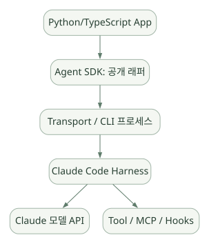

구현과 운영 / 단원 08
공개 자료로 확인할 범위와 후속 실험
SDK 통신 경계, 설정 예시와 실패·복구 조건
먼저 연결해 보기
공식 저장소의 README·릴리스·설정·예제와 SDK 래퍼는 확인 가능한 자료이지만, CLI 내부 모델 루프 전체의 소스는 아닙니다. 분석 가능한 외부 계약과 후속 관찰 실험을 나누어 읽으세요.
프로젝트 트리·권한 JSON·분석 산출물·수치 검증 코드와 연구 기록은 원문의 구성 예시입니다. 샘플 정책을 복사한 것과 실제 우회 차단을 검증한 것은 다릅니다. 장애 대응과 SLO 목표도 측정된 제품 성능으로 오해하지 마세요.
읽는 관점실제 공개 API·구성, 개념용 의사코드, 권장 실험과 미검증 항목을 분명히 나누세요.
17. 공개 자료 기반 내부 구조 추적 가이드#
17.1 코드 분석의 시작점과 제한#
[공개 자료 확인] anthropics/claude-code 저장소에는 README, CHANGELOG, 예제, 플러그인, 설정 파일, 개발 컨테이너 등 공개 자료가 있다. 그러나 Python Agent SDK의 internal_client.py 같은 코드가 존재한다고 Claude Code CLI의 모델 판단 루프 본체까지 같은 방식으로 공개되었다고 가정할 수 없다. [R02][R03][R25]
이 문서는 비공개 실행 엔진의 클래스명이나 함수명을 꾸며 내지 않는다. 대신 반드시 소스로 확인 가능한 연결 지점을 중심으로 조사 절차를 제공한다.
17.2 실제 확인할 수 있는 코드·구성 대상#
| 공개 확인 대상 | 실제 볼 수 있는 것 | 이로부터 단정하면 안 되는 것 |
|---|---|---|
| 공식 GitHub README | 설치·제품 개요·기본 CLI | 비공개 루프 전체 구현 |
| Releases/CHANGELOG | 기능 추가·보안 패치·회귀 이력 | 내부 알고리즘의 정확한 자료구조 |
.claude 예제 |
Instruction·Skills·Hooks 구성 예 | 제품의 모든 기본 내장 프롬프트 |
| Plugins/Mods 자료 | 확장 API·도구 등록 패턴 | 모든 런타임 Tool Dispatch 구현 |
| CLI reference | 외부 입력·옵션·출력 계약 | 내부 실행 스레드/큐 구조 |
| Agent SDK 공개 Python 래퍼 | CLI 프로세스 실행 및 메시지 통신 경계 | Claude Code 엔진의 전체 내부 Loop |
17.3 내부 동작 분석을 위한 7단계 실험 계획#
아래는 실제 실행하지 않은 후속 분석 계획이다.
실험 A — 모델과 Tool의 실행 경계#
- 통제된 빈 프로젝트에서 Claude Code 실행.
- “파일 목록을 확인하고 파일 개수만 알려 달라” 요청.
- 어떤 Tool이 호출되고 어떤 인자를 받는지 기록.
- Tool 결과만 바꿨을 때 후속 모델 답변이 어떻게 달라지는지 비교.
실험 B — CLAUDE.md 로딩#
- 프로젝트 내 CLAUDE.md를 추가하고 세션 새로 시작.
/context에서 실제 로딩 여부 확인.- 사용자 홈과 프로젝트 파일의 충돌 사례를 만들어 우선순위·적용 여부 관찰.
- 단, 모델이 지시를 따르는 비율로 정책의 보안성을 판단하지 않는다.
실험 C — AGENTS.md 로딩#
- 동일한 저장소에
AGENTS.md만 둘 때와CLAUDE.md를 함께 둘 때 비교. - Project instructions 기본값과
claude-md-and-agents-md차이를 확인. @AGENTS.mdimport 및 버전 조건 재검증.
실험 D — Skill 로딩#
- 간단한
SKILL.md생성. - Skill 설명만 제공한 상태와 실제 호출했을 때 Context 차이 확인.
- 수동 호출/자동 호출/
disable-model-invocation의 작동 비교.
실험 E — Permission + Hooks#
- 읽기 Tool과 Bash 호출을 각각 요청.
- 허용/거부, Hook 기록과 입력 경로를 관찰.
- 위험 명령 우회 패턴은 프로덕션 환경이 아닌 격리된 테스트 컨테이너에서만 시도.
실험 F — Session·Context 압축#
- 장시간 문서 분석에서
/context를 점검. - 압축 전후에 세부 수치·경로·작업 상태의 손실 가능성을 평가.
- 중요한 값을 외부 파일에 기록한 그룹과 기록하지 않은 그룹 비교.
실험 G — Subagent/Team#
- 독립된 두 개의 조사 업무를 Subagent로 위임.
- 대화 Context 절약, 비용, 출력 품질, 상호 의존·충돌을 비교.
- Team 기능은 별도 실험 환경에서만 검토.
17.4 로그에서 추출할 수 있는 기술적 사실#
관측 가능한 것:
- 어떤 Tool이 호출됐는지.
- 어떤 파일·API에 접근했는지(노출된 로그 범위 내).
- 도구 실행 후 어떤 결과가 모델에 반환됐는지.
- Permission/Hook이 실제로 차단했는지.
- 파일 변경과 테스트 결과가 일치하는지.
확정하기 어려운 것:
- 모델의 비공개 내부 사고 과정.
- 압축 알고리즘의 모든 휴리스틱.
- 내부 모델 라우팅·실행 큐의 상세 코드.
- 문서에서 설명하지 않은 비공개 사전·사후 필터.
17.5 Claude Agent SDK와 연결하는 코드 수준 경계#
이미 별도로 학습한 Claude Agent SDK Python의 공개 코드는 보통 호스트 Python → SDK 클라이언트 → CLI 프로세스 전송 → 메시지 스트림·제어 이벤트의 범위를 조사하기 좋다. 반면 CLI 안에서 모델이 어떤 Tool을 고르고 컨텍스트를 어떻게 재구성하는지의 실제 소스 추적과는 구별해야 한다. [R25][R29]
넓은 도식은 가로로 이동하며 읽을 수 있습니다. 도식 크게 보기 ↗

원문에 수록된 학습용 도식입니다. 노드·화살표·분기 라벨을 보존해 다시 배치했습니다. 세부 조건과 예시·구현의 구분은 앞뒤 본문을 함께 읽으세요.
도식 원문 보기 (Mermaid)
flowchart LR
PY[Python/TypeScript App] --> SDK[Agent SDK: 공개 래퍼]
SDK --> IPC[Transport / CLI 프로세스]
IPC --> CLI[Claude Code Harness]
CLI --> API[Claude 모델 API]
CLI --> TOOLS[Tool / MCP / Hooks]중요: 위 그림의 SDK와 CLI 사이를 문서·공개 코드로 추적하더라도, CLI 자체가 완전 오픈소스라고 결론 내려서는 안 된다.
18. 실전 분석용 구성 예시 모음#
18.1 권장 프로젝트 트리#
claude-code-semi-study/
├── README.md
├── AGENTS.md # 다른 Agent와 공유하는 기본 규칙
├── CLAUDE.md # @AGENTS.md + Claude 전용 지시
├── .claude/
│ ├── settings.json
│ ├── settings.local.json # 로컬에만 유지
│ ├── rules/
│ │ ├── data-quality.md
│ │ └── report-style.md
│ ├── agents/
│ │ ├── data-auditor.md
│ │ └── method-reviewer.md
│ ├── skills/
│ │ ├── wafer-eda/SKILL.md
│ │ └── sop-review/SKILL.md
│ └── hooks/
│ └── inspect_command.py
├── .mcp.json # 프로젝트 공통 MCP 서버 선언(비밀값 금지)
├── data/
│ ├── README.md
│ └── synthetic_wafer.csv
├── src/
│ ├── metrics.py
│ └── validate.py
├── tests/
│ └── test_metrics.py
├── experiments/
│ └── run_config.yaml
└── reports/이 트리는 실제 파일 생성 명령이 아니라 추천 구성 예시다.
18.2 기본 설정 예시#
{
"permissions": {
"deny": [
"Read(.env)",
"Read(.env.*)",
"Bash(rm -rf *)"
]
}
}매우 중요: 위 deny 샘플은 형식 설명에 불과하다. CLI의 Bash 규칙은 복합 Shell 명령·리다이렉션·스크립트 호출 등의 우회를 완전히 포착하지 못할 수 있으므로 이 JSON만으로 데이터 삭제나 비밀 파일 읽기 차단을 보장하지 않는다. 실제 프로젝트에서는 허용 목록, OS·컨테이너 read-only 마운트, DB 최소 권한, 정책 테스트로 보완해야 한다. 또한 일부 도구와 경로 패턴의 상세 문법·매칭 대상은 공식 Permission 문서를 따라 검증해야 한다. [R10]
18.3 간단한 분석 산출물 스키마#
{
"dataset_id": "synthetic_wafer_2026_01",
"input_hash": "sha256:replace-with-real-hash",
"filters": {
"date_from": "2026-01-01",
"date_to": "2026-01-31"
},
"metric": {
"name": "yield_rate",
"numerator": 980,
"denominator": 1000,
"value": 0.98,
"unit": "ratio"
},
"validation": {
"schema_check": "passed",
"metric_check": "passed"
},
"notes": [
"Synthetic data only; production data not used"
]
}위 JSON은 권장 보고 형식이다. Claude Code의 기본 Structured Output 기능이 이 형식을 자동으로 보장한다고 주장하는 것이 아니다. 실제로는 --json-schema 같은 지원 옵션, 별도 검증 스크립트, SDK의 출력 스키마 또는 Tool 서버에서 강제할 수 있는지 환경에 맞춰 확인한다.
18.4 통계 검증 코드 예시#
# [학습용 Python 예시] 순수 수학 검증 로직. Claude Code 내장 코드가 아님.
from dataclasses import dataclass
@dataclass(frozen=True)
class YieldMetric:
good_count: int
total_count: int
def value(self) -> float:
if self.total_count <= 0:
raise ValueError("total_count must be positive")
if self.good_count < 0 or self.good_count > self.total_count:
raise ValueError("count invariant violated")
return self.good_count / self.total_count
assert YieldMetric(980, 1000).value() == 0.98왜 중요한가? Agent는 산식을 제안할 수 있지만 검증된 코드에서 분모·분자·범위를 강제하면 결과 해석과 계산을 분리할 수 있다.
18.5 재현 가능한 실험 기록 템플릿#
experiment_id: demo_wafer_eda_001
agent_environment:
product: Claude Code
version: 2.1.310
model: record_actual_model_id
input:
dataset_id: synthetic_wafer_2026_01
checksum: replace_with_sha256
schema_version: 1.0.0
policy:
db_access: read_only
network_egress: restricted
human_approval_for_write: required
analysis:
tool_limit: record_actual_limit
statistical_test: record_actual_test
result:
run_status: not_executed
validation_status: not_executed이를 대화나 Auto Memory에만 맡기지 말고 프로젝트 파일 및 실험 관리 시스템에 보관한다.
19. 실패·장애·보안 운영 시나리오#
19.1 실패 유형별 대응 표#
| 실패 사례 | 흔한 원인 | 실무 대응 |
|---|---|---|
| 잘못된 파일 분석 | 파일명 유사, 작업 디렉터리 혼동 | 입력 경로·해시·파일 헤더 확인 |
| 문서의 오래된 공정 기준 사용 | Memory/문서 버전 충돌 | 승인된 최신 문서 버전과 출처 강제 |
| 반복 Tool 호출로 비용 증가 | 잘못된 종료 조건, 에러 재시도 반복 | 턴·시간·호출 상한, 에러 분류 |
| Shell 명령 실패 | 패키지 미설치, 권한, OS 차이 | 환경 점검, 사용 가능한 대체 경로 |
| Sandbox 오류 | 경로/네트워크 제한 | 정책 위반인지 환경 구성 문제인지 구분 |
| MCP 서버 응답 실패 | 인증·타임아웃·서비스 장애 | 오류·재시도·회로 차단·캐시 정책 |
| Context 요약 손실 | 긴 대화·대용량 출력 | 상태를 외부 문서/테스트 결과로 보존 |
| 분석 숫자 불일치 | 중복, 누락, 시간대, 단위 | 수치 검증 모듈과 샘플 대조 |
| 개인정보/기밀 노출 위험 | 민감 로그·외부 API 호출 | 필드 마스킹, 정책, 로깅·송신 차단 |
| 외부 문서의 악성 지시 | Prompt Injection | Tool 출력 신뢰도 분리, 권한 고정 |
19.2 정량적인 운영 SLO 예시#
다음은 실제 벤치마크 수치가 아닌 실험 설계 예시다.
- 읽기 전용 Tool 요청 성공률 ≥ 99% 목표.
- 분석 결과 스키마 검사 통과율 ≥ 99% 목표.
- 잘못된 단위·분모 사용 0건 목표.
- 금지된 Tool 실행 0건 목표.
- 1회 분석 95백분위 완료 시간 목표를 데이터 크기별로 지정.
- 단위 테스트 없는 분석을 ‘검증 완료’로 표시한 사례 0건 목표.
이 수치가 Claude Code의 실제 성능이라는 뜻은 아니다.
19.3 안전한 도입 단계#
- 오프라인 분석: 모의·공개 데이터, 텍스트 위주, 읽기 전용.
- 통제된 Tools: 사전 정의된 함수·출력 스키마·사용자 검증.
- 사내 서비스 연계: 권한·감사·로그 마스킹·승인된 망 경로.
- Multi-Agent 연구: 독립 역할·비용·결과 검증 기준 마련.
- 업무용 파일럿: 사용자 승인과 검토자 책임·복구 절차.
실제 생산 설비의 제어·레시피 변경 등 고위험 행동을 데모의 기본 기능으로 삼지 않는다.